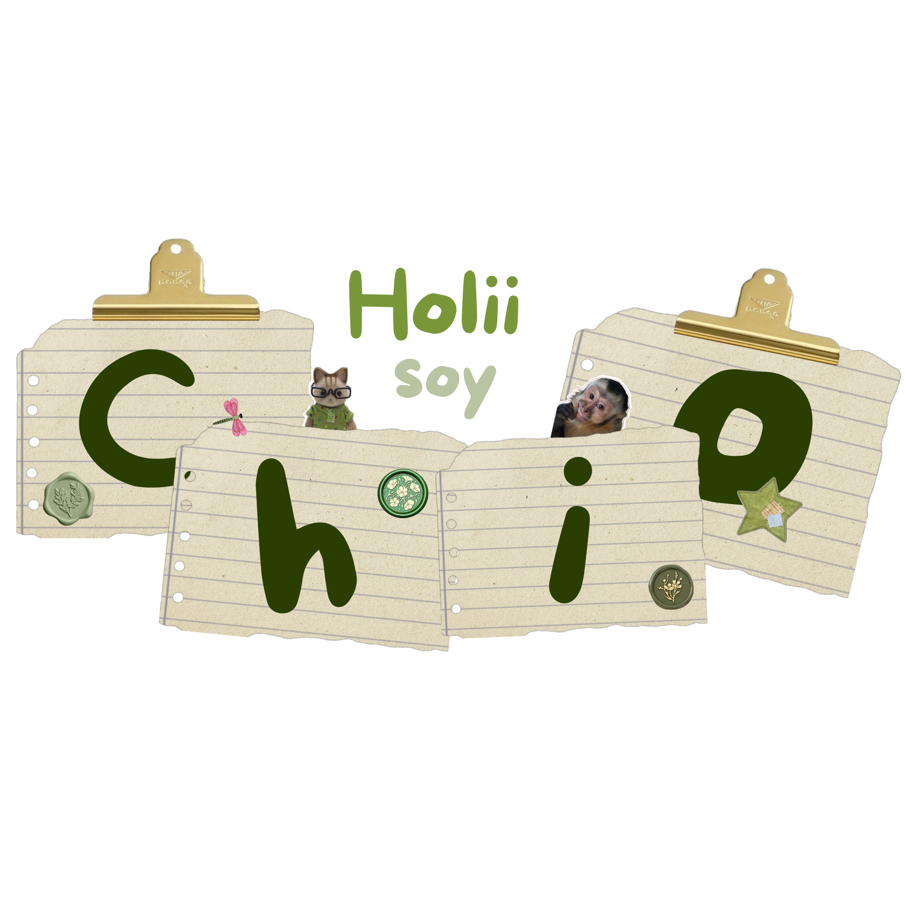

Diseñadora en Diseño Multimedia
Soy Xhiomara Ayelen Perez Ramirez, aunque mis amigos me dicen Chío.
Nacida en Cd. del Carmen, Campeche, Mexico, soy estudiante de la UNACAR y diseñadora en formación. Soy una persona creativa que busca plasmar sus ideas a través del arte. Desde pequeña me ha gustado dibujar, haciendo garabatos por todas partes y recreando ilustraciones, siempre dándoles mi toque.
Me inspiro en el anime y en películas. Actualmente, aunque no me he especializado en un área específica, disfruto crear modelados 3D e ilustraciones digitales.
Siempre estoy abierta a aprender nuevas habilidades que me permitan expresar mejor la creatividad que llevo dentro.